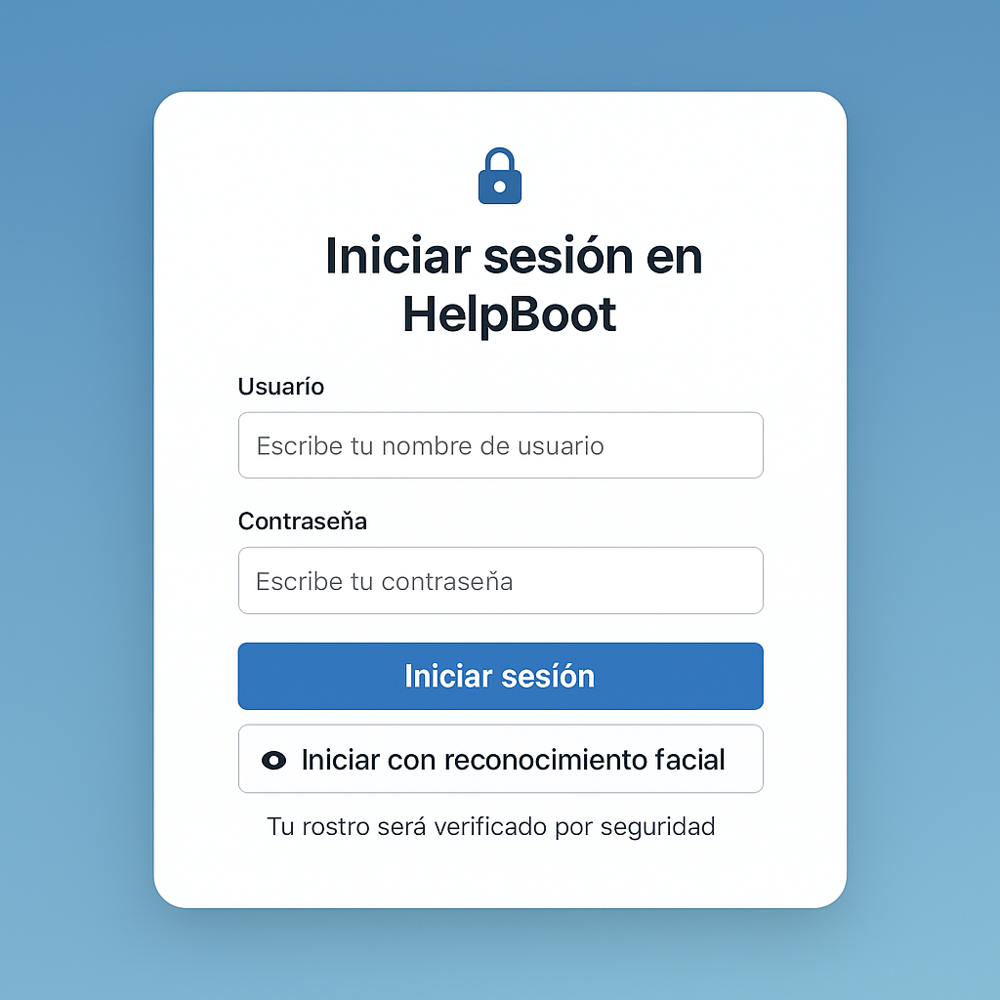

Helpboot
Una crisis de ansiedad en adolescente ocurre cuando ellos se sienten sobrepasados por emociones como el miedo, la ira o la frustración, por eso, la clave es estar presente, escucharlos y hacerles saber que siempre cuentan con tu apoyo.
HelpBoot
Es tu asistente virtual diseñado para ayudarte a expresar cómo te sientes y orientarte en momentos de ansiedad. 💬
🧠 HelpBoot - ¿Cómo te sientes hoy?
🧠 Foro de Apoyo Emocional
¿Buscas compartir tus experiencias o leer a otras personas con situaciones similares? Visita este espacio de apoyo emocional y debate:
Ir al Foro de la Clínica de Ansiedad 💬